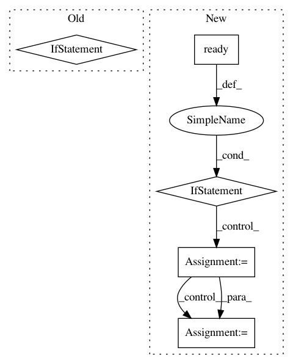

ad4181fbbb886ff56cfc0219c4b9ce39e07c7f7d,ilastik/applets/featureSelection/featureSelectionGui.py,FeatureSelectionGui,onFeatureButtonClicked,#FeatureSelectionGui#,208
Before Change
def onFeatureButtonClicked(self):
// Refresh the feature matrix in case it has changed since the last time we were opened
// (e.g. if the user loaded a project from disk)
if self.mainOperator.SelectionMatrix.ready():
self.featureDlg.selectedFeatureBoolMatrix = self.mainOperator.SelectionMatrix.value
// Now open the feature selection dialog
self.featureDlg.show()
def onNewFeaturesFromFeatureDlg(self):
opFeatureSelection = self.operatorForCurrentImage()
After Change
def onFeatureButtonClicked(self):
// Refresh the feature matrix in case it has changed since the last time we were opened
// (e.g. if the user loaded a project from disk)
if self.mainOperator.SelectionMatrix.ready() and self.mainOperator.FeatureIds.ready():
// Re-order the feature matrix using the loaded feature ids
matrix = self.mainOperator.SelectionMatrix.value
featureOrdering = self.mainOperator.FeatureIds.value
reorderedMatrix = numpy.zeros(matrix.shape, dtype=bool)
newrow = 0
for group, featureIds in self.FeatureGroups:
for featureId in featureIds:
oldrow = featureOrdering.index(featureId)
reorderedMatrix[newrow] = matrix[oldrow]
newrow += 1
self.featureDlg.selectedFeatureBoolMatrix = reorderedMatrix
// Now open the feature selection dialog
self.featureDlg.show()
def onNewFeaturesFromFeatureDlg(self):
opFeatureSelection = self.operatorForCurrentImage()
In pattern: SUPERPATTERN
Frequency: 3
Non-data size: 5
Instances
Project Name: ilastik/ilastik
Commit Name: ad4181fbbb886ff56cfc0219c4b9ce39e07c7f7d
Time: 2012-09-27
Author: bergs@janelia.hhmi.org
File Name: ilastik/applets/featureSelection/featureSelectionGui.py
Class Name: FeatureSelectionGui
Method Name: onFeatureButtonClicked
Project Name: ilastik/ilastik
Commit Name: 05fefb031b5668b8e823298257d907b67d8a2ca0
Time: 2012-09-05
Author: bergs@janelia.hhmi.org
File Name: ilastik/applets/vigraWatershedViewer/opVigraWatershedViewer.py
Class Name: OpVigraWatershedViewer
Method Name: setupOutputs
Project Name: ilastik/ilastik
Commit Name: 9a3277aa76f7b8374de002e6c72bff142b594cf7
Time: 2012-08-21
Author: bergs@janelia.hhmi.org
File Name: ilastik/applets/featureSelection/featureSelectionGui.py
Class Name: FeatureSelectionGui
Method Name: setupLayers